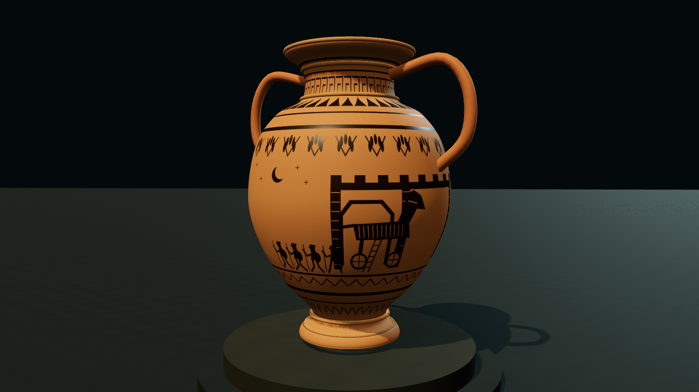
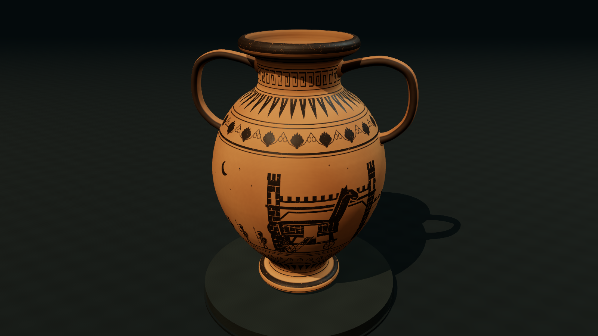
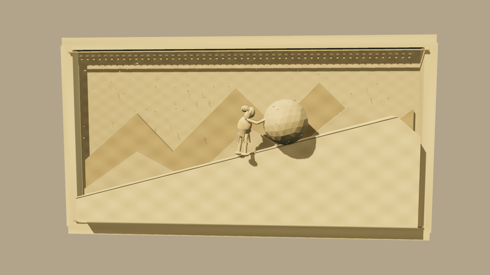
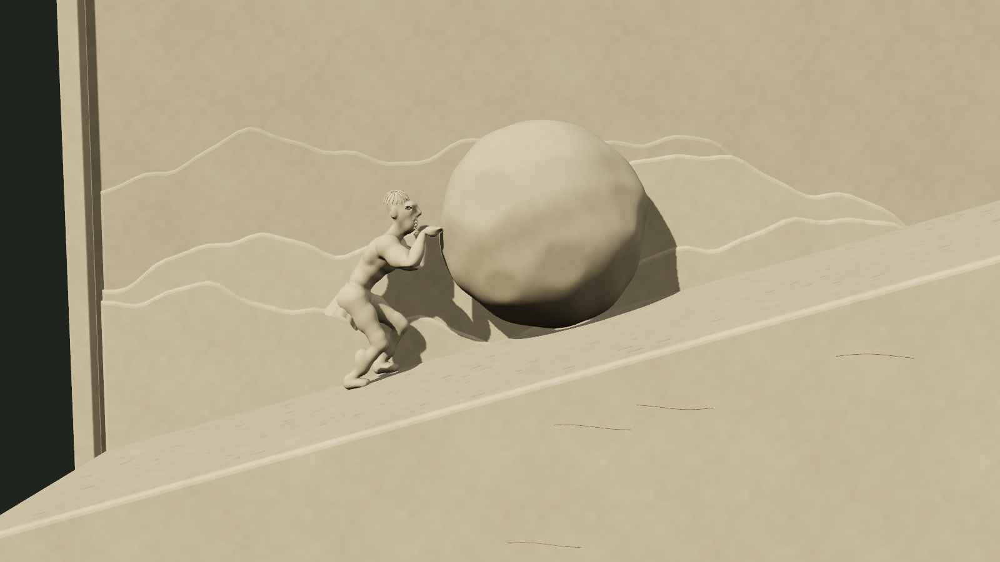
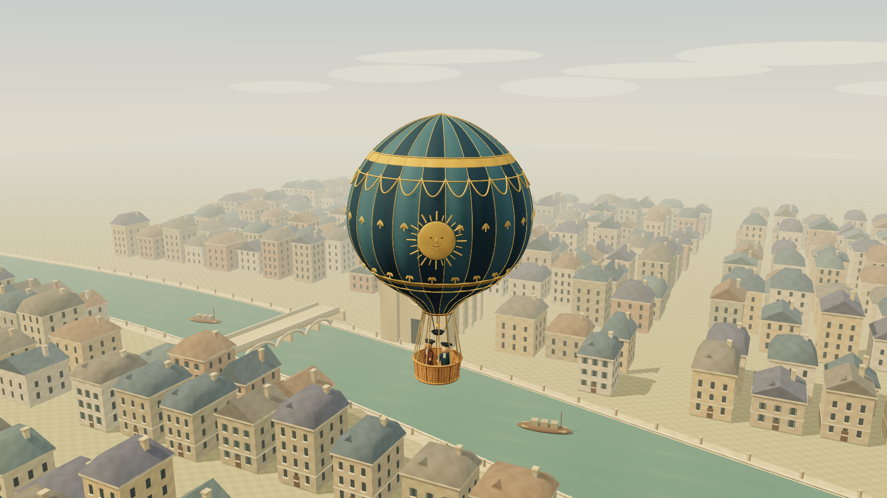
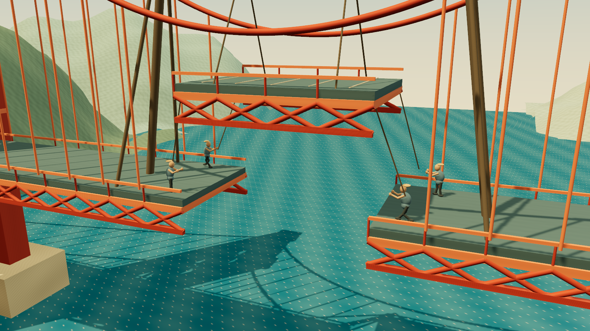
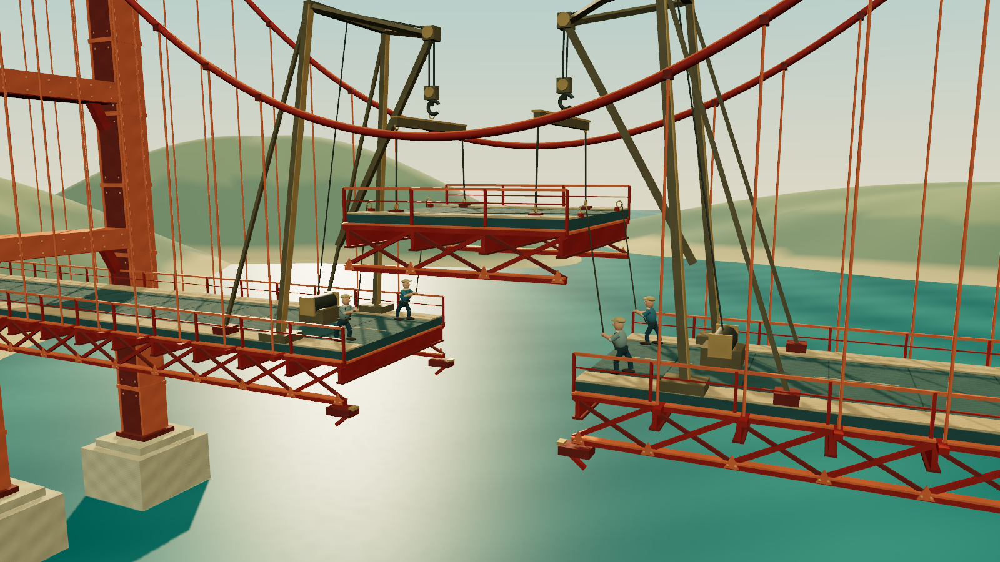
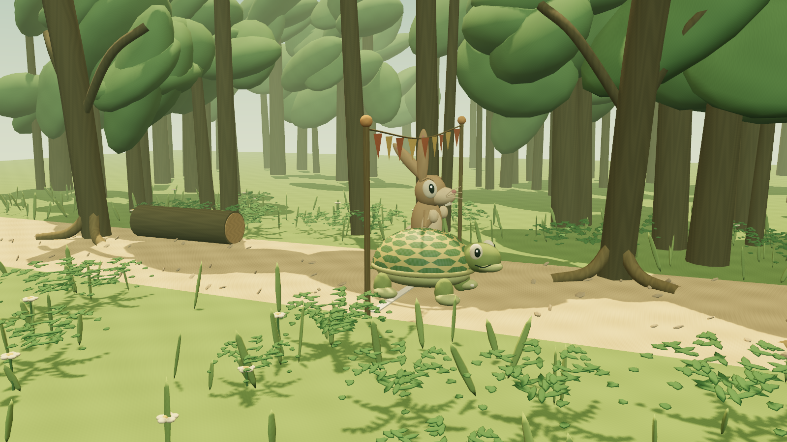
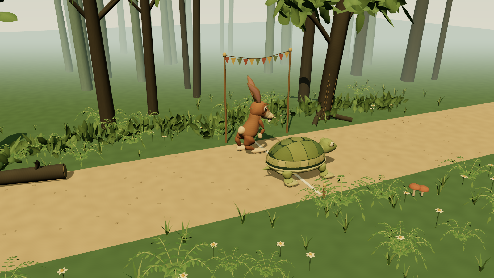
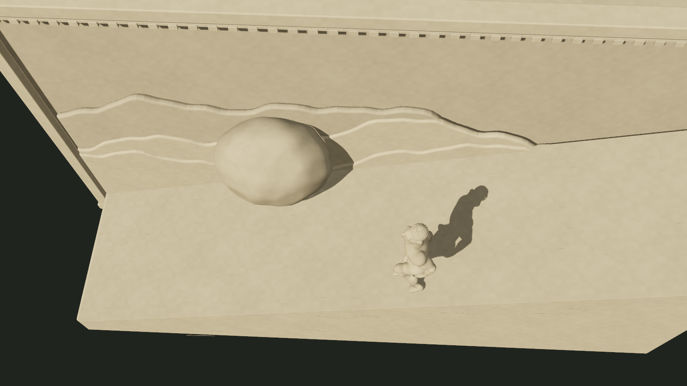

ASTRA EXTRA HIGH · ORIGINAL PROCEDURAL STUDIES
From a renderer to a convincing scene
The Sisyphus pilot improved because its geometry, surfaces, lighting, camera and movement were designed around a particular subject. Merely choosing Three.js or TSL does not produce realism. The four other scenes apply the same attention while keeping their distinct artifact, period-illustration, poster and storybook styles.
What the Deskworlds inspection actually showed
We inspected a local Windows port of Deskworlds. That copy bundles Three.js revision 180 and uses WebGL2 with handwritten GLSL. Its C#/.NET 8 and WebView2 host embeds the browser scenes; it is not the source of their visual detail. The local port README credits Chase Lean and says the scenes were copied unchanged from the original project. We did not independently compare that statement with upstream.
| Observed source | Concrete technique | Lesson applied here |
|---|
bettascape/src/shaders.js
render.js | Overlapping scale relief, self-shadowing, view-dependent color, translucent fin layers and a custom lens pipeline. | Model the structure of the subject at several scales. A general noise texture cannot substitute for anatomy or layered material. |
riverscape/src/fish-anatomy.js
environment.js | Authored anatomical profiles, moss distribution, contact shadows and photographic rock/wood/sand maps credited to Poly Haven. | Silhouette, attachment, contact and lighting must agree. Our scenes retain the original-art constraint, so their surface detail is generated rather than imported. |
reefscape/assets/README.md
terrain.js | Precomputed procedural limestone geometry, baked visibility and original surface atlases. | Generate expensive static form once, then animate a compact mesh. Procedural does not have to mean a few visible primitives. |
plasmascape/src/render.js
plasma.js | Subject-specific streamer behavior, reflected light and HDR bloom; explicitly simplified glass treatment. | Use coherent, explainable approximations, and identify what they do not simulate. |
These are concept-level lessons. No Deskworlds source code, meshes, textures, reference images or other artwork were copied into this collection. Our implementation remains Three.js 0.186.1 with TSL, generating WebGPU or WebGL2 shaders from the same scene code.
How the original Sisyphus implementation changed
The earlier articulated figure became an original connected implicit sculpture, baked into a skinned mesh with shaped torso, limbs, face, hands and feet. Separate carved locks and a pleated drape add readable structure. The limestone combines original grain and tool marks with restrained roughness and grazing light. The camera moves closer for the push and rises for the descent.
Source: anatomy.js, figure.js, materials.js, motion.js.
// src/materials.js — detail is tied to the modeled surface.
const p = TSL.positionGeometry;
const broad = TSL.mx_noise_float(p.mul(.76));
const medium = TSL.mx_noise_float(p.mul(6.3));
The texture is attached to the sculpture's authored coordinates, so it follows the moving form. Light reveals its shape; texture variation does not replace that shape.
The important correction was choreography
The first pilot let the figure follow while the rock was still alongside him. A depth offset alone was hard to read from the camera. The revised figure withdraws his hands, takes six planted steps aside, waits, follows in a separate lane and steps back only after reaching the downhill side of the stone. A mesh check also caught an unsafe diagonal return, which was replaced with this route.
// src/motion.js — named phases make the safety sequence inspectable.
export const PERIOD = {
release:3.8, handsFree:4.25, sideStart:4.25, clear:6.95,
follow:9.1, stop:10.65, downhill:13.9, arrive:16.6, rejoin:17.3
};The pilot checks 4,801 motion samples and 2,965 deformed-mesh poses. Triangle bounds around body, head details, limbs and drape are checked against an enclosing boulder ellipsoid. The conservative minimum gap is 0.412 scene units, or 0.281 after an extra motion margin. This is dense sampling, not a formal proof of continuous collision freedom. The overhead shot also keeps the projected figure and boulder bounds visibly separated.
The four scene refinements
Trojan vase: build the object before decorating it
The new continuous vessel profile includes a recessed foot, belly, shoulder, rolled lip, inner wall and internal floor. Oval strap handles thicken where they join the body. Clay grain, throwing marks, pigment wear and separate slip roughness stay attached to this form. The elevated camera reveals the hollow mouth. Source: vessel.js: shellGeometry, handleGeometry, clayMaterial.
A separate static ornament mask avoids repainting the decoration every frame. The original 2048 × 512 narrative strip animates attendants, wheel spokes, the entering horse, nightfall, hatch, ladder and four staggered warrior exits. It is authored pigment animation on a three-dimensional artifact. Source: frieze.js: storyState, makeFrieze. Its pure timeline was checked at 2,001 samples.
Paris balloon: every part belongs to one suspended assembly
The envelope has 24 shaped panels, longitudinal seams, bands and original ornament. An open basket has actual geometric woven reeds, framing and two passengers. Twelve load ropes join separate basket and collar anchors. Because they share one moving assembly, sway cannot detach them. A broad launch square stays clear while the camera rises into a city of mixed gabled, hipped and mansard roofs. Repeated buildings and the 215 waving spectators use instancing.
Source: balloon.js: buildBalloon, city.js: buildCity, buildCrowd, flight.js: flightAt and world.js: update, state. The 201-pose geometry check measures the actual rope endpoints, conservative obstacle bounds and projected framing. Minimum obstacle clearance is 9.852 units; maximum rope mismatch is 7.34e−15. The entire assembly remains inside the frame. Geometry evidence.
Golden Gate: show the load path and the seating event
Flanges, cross-bracing, joint plates and rivets replace the sparse earlier structure. Repetition is instanced: 75 meshes describe 2,196 instances, compared with 684 separate meshes in the previous scene. Derrick heads, hoist lines, hook blocks, spreaders, slings and roadway eyes form a connected lifting assembly. Guide ropes terminate at planted workers' hands. The section lowers, aligns, seats at 8.8 seconds, pauses for the crew and then reveals the bay. The water highlight uses the same directional light as the steel.
Source: geometry.js: Instances, placeRod, makeWorker, motion.js: bridgePose, scene.js: makeDeck, update, state and materials.js: bayWater. Across 2,401 samples, the conservative side clearance stays at least 0.111 units, bearing penetration is zero, rendered rope endpoint error is at most 1.071e−6 and worker foot contact error is zero. Geometry evidence.
Tortoise and hare: anatomy and acting make the story readable
The tortoise uses a domed shell with separate vertebral, costal and marginal scutes, a lower shell rim, shaped head and four articulated legs. The hare has shaped muzzle, haunches, segmented ears, eyelids, brows and mouth. Sleep, ear twitch, surprise, determined launch, sprint and an exhausted ending are explicit beats. Feet retain fixed world positions during stance and use curved trajectories during swing. Trees, leaves, grasses and ground plants are built in batches.
Source: anatomy.js: makeTortoise, makeHare, motion.js: pose, tortoiseFoot, hareFoot, woodland.js: makeWoodland and scene.js: update, state. The frame review led to a clearer camera, stronger foreground contrast and separated finish poses. Across 2,401 motion samples, planted-foot drift is zero. All 89 character meshes were also checked at 301 poses, including ear skinning; their lowest vertex remains above the path. The tortoise crosses at 14.121 seconds, ahead of the hare at about 14.746 seconds. These authored nose probes and sampled bounds are not a physical race simulation. Motion and geometry evidence.
Matched earlier and refined captures
Each pair uses the same 1600 × 900 viewport and absolute time. Camera, construction and staging intentionally change between versions. These are rendered frames, not concept art; visual preference remains subjective.
Troy, Written in Clay · 20 seconds

Earlier Three.js generation
Refined version · click to playSisyphus, in Stone · 0 seconds

Earlier Three.js generation
Refined version · click to playAbove Paris · 12 seconds
 Earlier Three.js generation
Earlier Three.js generation
Refined version · click to playJoining the Golden Gate · 0 seconds

Earlier Three.js generation
Refined version · click to playSlowly Wins the Day · 20 seconds

Earlier Three.js generation
Refined version · click to playMovement and rendering evidence

The retained Sisyphus correction at 8.5 seconds. Dense deformed-mesh sampling includes a temporal margin; it is not a formal continuous-collision proof.Every new scene was checked for errors, external requests, framing, backward pixel seeking and stable renderer resource counts on WebGPU and forced WebGL 2. The four new scenes hold after twenty seconds; Sisyphus alone loops. The Sisyphus source and baked sculpture remain byte-identical to the previously verified pilot, whose 4,801 motion samples and 2,965 mesh poses remain applicable. It was also reloaded and captured from this collection.
Actual scene draws are measured separately from browser animation callbacks. The deadline scheduler targets 60 draws per second on desktop and 30 in the portrait quality tier. The table reports achieved rates, including the slower desktop WebGL fallback, on one Intel gen-12lp laptop in Edge 154.0.4258.48. Desktop uses 1600 × 900; portrait uses a 390 × 844 viewport with a 390 × 219 landscape canvas.
| Scene | Desktop WebGPU | Desktop WebGL 2 | Portrait WebGPU | Portrait WebGL 2 |
|---|
| Troy, Written in Clay | 60.0 fps | 27.9 fps | 30.0 fps | 29.3 fps |
| Sisyphus, in Stone | 59.9 fps | 38.6 fps | 30.0 fps | 30.0 fps |
| Above Paris | 60.0 fps | 35.7 fps | 30.0 fps | 30.0 fps |
| Joining the Golden Gate | 60.0 fps | 29.2 fps | 30.0 fps | 30.0 fps |
| Slowly Wins the Day | 53.8 fps | 32.5 fps | 30.0 fps | 30.0 fps |
Desktop WebGPU playback was measured through the completed timeline. Other new-scene throughput samples ran for eight seconds after seeking the whole timeline to warm resources. The retained Sisyphus measurements cover its complete loop. Browser viewport tests are not physical-phone benchmarks. CPU submission timings are not GPU execution times; allocation counters are not total process memory. Browser measurements · Tested source hashes · Sisyphus motion · Sisyphus clearance.
Limits, attribution and provenance
These are authored animations, not complete physical simulations. Clearance tests cover the stated bounds and sampled poses. The historical scenes are period-inspired illustrations; decoration, Paris geography, bridge equipment and construction sequence were not verified against archival sources under the original no-research constraint.
Prompt-video attribution: Arena AI, beginning at 28:09. That attribution was supplied by the project owner; the video was not independently reviewed, and no frames or artwork are included. Three.js 0.186.1 is included under its MIT license.
The requested configuration is gpt-6-astra with xhigh reasoning effort. This records the request, not an independently audited model identity. The earlier Astra Canvas and Three.js collections remain separate comparisons. Private work notes and unrelated generations are excluded from publication.
Open this collection